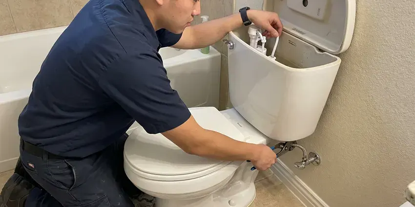
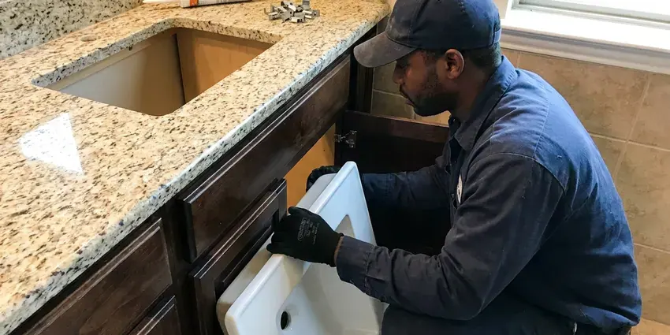

Toilet Installation in Cincinnati, OH
Old toilet cracked or past saving? HRL Plumbing can usually swap it out the same day in Cincinnati, OH.
- Next-Day Installs Available
- Local Cincinnati Plumbers
- New Wax or Foam Seal Included
- Built to Plumbing Code
Schedule a Toilet Install in Cincinnati, OH
Most installs can be booked within a day or two.
Getting a New Toilet Set Right in Cincinnati, OH
Licensed plumbers from HRL Plumbing set toilets in Cincinnati, OH for remodels, additions, rentals and plain old replacements. Most of a good install is hidden. That means a flange screwed down to solid subfloor or concrete, closet bolts that are brass or stainless instead of plated steel, and a seal sized for the gap between the horn and the flange. Get those right and the toilet stays dry for decades.
Our expertise includes:
- WaterSense 1.28 gpf and dual-flush upgrades
- Closet flange repair and replacement
- Braided supply line and quarter-turn stop replacement

Additional Bathroom Plumbing Services in Cincinnati, OH
From toilets to showers, our bathroom plumbing team in Cincinnati, OH handles repairs, installs, and upgrades with tidy, code-compliant work.


Toilet Repair service for Cincinnati homeowners


Customers
Why Choose HRL Plumbing for Toilet Installation in Cincinnati, OH?
A sloppy install costs more than the toilet did. A failed seal wets the subfloor before anything shows. Once the vinyl lifts or the grout darkens around the base, the plywood under it often needs cutting out and replacing, flange included. We set toilets to plumbing code so that does not happen to yours.
- Local Expertise, We know the homes around Cincinnati, from slab foundations to older cast iron drains.
- Correct Rough-In, We measure 10, 12 or 14 inch rough-ins from the finished wall before the toilet is ordered.
- Full Testing, Five or more flushes and a dry paper towel at every joint before we go.
Citywide Coverage
Scheduling an install anywhere in Cincinnati takes one phone call. Most jobs get booked within a day or two. We give you a two-hour arrival window, and the plumber calls ahead so you are not stuck waiting at home all morning wondering when the truck will show up.
Experienced Team
Years on the job teach you which shortcuts fail. Stacked wax rings fail. Plastic bolts, caulk over a rocking base, flanges fastened to tile and reused supply lines all fail too.
Safety-First Approach
Bidet seats and smart toilets bring electricity close to water. The outlet gets tested for GFCI protection first. With no outlet close by, a licensed electrician adds one, and no extension cord ever runs across a wet floor.
Trusted Certified Cincinnati Plumbing Services Professionals
At HRL Plumbing, we take pride in licensed, certified plumbing services throughout Cincinnati, OH. Those papers on the wall mean something. Our plumbers hold recognized industry credentials, and they follow strict safety and quality rules on every repair, installation and maintenance call we run.
Call Us Now PHCC Plumbing Contractor Recognition
PHCC Plumbing Contractor Recognition Better Business Bureau (BBB) Accreditation
Better Business Bureau (BBB) Accreditation Angi Certified Pro
Angi Certified Pro ISO 9001 Quality Management Certification
ISO 9001 Quality Management CertificationToilet Installation Jobs We Handle in Cincinnati, OH
Standard Toilet Installation in Cincinnati
A standard floor-mount toilet is a two-hour job when the flange is sound. The stop gets shut, the tank drained, and the old bowl lifted out. After scraping the old wax off, we check the flange for cracks, set new stainless bolts, and lower the new toilet straight down onto a fresh seal so it compresses evenly. The old one leaves with us.

Pressure-Assisted Toilet Installation in Cincinnati
Pressure-assisted toilets have a sealed vessel inside the tank that uses line pressure to push the flush. Below about 20 psi, they flush poorly. Before suggesting one, we put a gauge on a hose bib, and we mention the noise, because the flush carries through the whole house. They rarely clog.
Toilet Flange and Wax Ring Replacement in Cincinnati, OH
The closet flange is the ring that ties the toilet to the drain, and it is the weak point on most old installs. On cast iron, the bolt slots rust out first. Plastic flanges crack from overtightened bolts, and a stainless repair ring screwed over the old one usually gives a solid anchor again. Seal goes on last.
Comfort-Height and ADA Toilets in Cincinnati
Aging in place usually starts in the bathroom. A taller toilet and a grab bar go a long way. If the drywall is already off, blocking gets added between studs so a grab bar can screw into wood, not hollow-wall anchors. We also center the bowl to ADA spacing.
Smart Toilet Installation in Cincinnati, OH
Smart toilets with heated seats and built-in bidets need two things the old toilet did not: power and a dedicated water connection. Most require a GFCI outlet within reach of the cord. We run the water side and mount the unit, and if a new outlet is needed we bring in a licensed electrician rather than splicing anything ourselves. Then we test every button.
Bathroom Remodel Toilet Installation in Cincinnati, OH
New tile over old vinyl can raise a bathroom floor by half an inch or more. That leaves the old flange sitting low. Either an extender ring brings the flange up or a new flange goes in, and relocating a toilet on a slab means saw-cutting concrete to move the drain. Moving it on a wood floor is easier.
Wall-Mounted Toilet Installation in Cincinnati
Wall-mounted toilets hang off a steel carrier bolted to the floor inside the wall. The tank sits behind an access plate. Because the carrier carries all the weight, we anchor its feet to the slab or framing first and check it for plumb before the drywall or tile goes up. Plan on a remodel, not a swap.

Customer-Supplied Toilet Installation in Cincinnati, OH
Bought the toilet yourself? First, look at the rough-in printed on the carton. Before the old toilet comes out, we inspect the new one for shipping cracks, because cracked china goes back to the store, not onto your flange. We bring the seal and stainless bolts.
Local Toilet Installation in Cincinnati, OH
Looking for a plumber near me during a remodel usually means juggling a tile setter and an inspector who only comes on certain days. We schedule around them. Give us the date the grout cures and we will book the toilet set for the next morning, with the flange height already confirmed from an earlier visit.
Our plumbers live and work around Cincinnati, so they see the same house styles and drain materials week after week, and they know which ones give trouble. Ohio has a lot of older housing, and many homes still have galvanized supply pipe and cast iron drains that are wearing out. It gives us a good guess at what sits under the old toilet before it comes up. We pull permits when a job needs one.
HRL Plumbing at a Glance
- Fully licensed plumbing team covering Cincinnati, OH
- 24/7 emergency service with same-day scheduling
- Upfront, flat-rate pricing before work begins
- 4.9-star rated by 673+ Ohio customers
Cincinnati Map
Cincinnati Information
- Population
- 311,097
- Area codes
- 513/859/937
- Service area
- Cincinnati and communities within 40 miles
- Nearby
- Hamilton, Middletown, Kettering, Dayton
Summer humidity causes condensation on cold pipes and toilets, which can drip onto basement ceilings and floors. A new toilet in a Cincinnati, OH home should sit flat on the floor, with no daylight under the base and no give when you sit. Anything less leaks eventually.
Expert Services
Call HRL Plumbing for honest, reliable plumbing from people who know the trade in Cincinnati, OH.
Our Specialized Plumbing Services in Cincinnati, OH
At HRL Plumbing, you get every kind of plumbing service from one company across Cincinnati, OH. We go from leak detection all the way to full system installations, for homes and commercial buildings, and we do it quickly at a fair price. Take a look at our core services below:


What to Expect From a Toilet Install in Cincinnati, OH
We run every toilet install in your Cincinnati, OH home the same way, start to finish, from the first measurement to the last flush.
Request a Quote
Call (740) 449-7505 with the toilet model or the kind you want. You get a flat price before anything is scheduled.
Old Toilet Removal
We close the stop, sponge the tank and bowl dry, and lift the old toilet out cleanly. It goes in a bag and leaves with us.
New Toilet Setup
The flange gets scraped and checked, a new seal goes on, and the bowl is set straight down onto stainless bolts. We shim it level before snugging the nuts.
Frequently Asked Questions About Toilet Installation in Cincinnati
Most homeowners in Cincinnati, OH pay $200 to $500 to have a toilet installed, fixture not included. Removing a stubborn old unit adds time. Bolts rusted solid have to be cut with a hacksaw or oscillating tool, and a cast iron flange that breaks during removal needs a repair ring, each of which adds labor.
About two hours for most floor-mount toilets. Smart and wall-mounted units run longer. Wall-mounted units usually need two visits, carrier first and bowl after the finish wall, and a smart toilet can hinge on the electrician.
Yes, our labor is guaranteed. If the install leaks, we come back and fix it free. Parts and porcelain are covered by the maker, typically one to five years on parts and longer on the china. Keep the box label for the model number.
Rough-in is the distance from the finished wall to the center of the toilet drain. Twelve inches is the most common. Some older homes and tight bathrooms have 10 or 14 inch rough-ins, and a toilet built for the wrong distance either will not fit against the wall or leaves an awkward gap behind the tank. Measure from the wall itself, not the baseboard.
Much of Ohio has hard water, which leaves scale in water heaters, clogs aerators and shortens the life of appliances. Hard water leaves scale in the rim jets and on the fill valve over time. Weak flushes follow. Look for full glazing and a simple fill valve, and pour vinegar down the overflow tube now and then to keep the jets clear.
Both seal fine on a flange set at the right height. Wax has decades behind it. Foam or rubber wax-free seals forgive a toilet that has to be lifted and reset, and they do not soften the way wax can in a warm bathroom or over radiant floor heat. We pick based on your flange height.
TOTO and American Standard do well in independent flush tests, and Kohler is close behind, with parts at most supply houses. Gerber and Mansfield are solid on a budget. The right pick depends on your rough-in and who uses the room.
We guarantee the workmanship on every toilet we set. Any leak from our install is our problem. The seal and supply joint are on us, and factory defects go to the manufacturer, with our help on the claim. Hang on to your receipt.
What People Are Saying About Our Plumbing Experts?

Brian W.
I smelled gas behind the dryer and called right away. The plumber found a corroded flex connector, replaced it, and pressure tested the whole line before turning the gas back on. He let me watch the gauge hold steady for fifteen minutes.
Gas Line Repair · Dayton, OH
Nathan E.
Our tankless heater kept throwing an error code and shutting off mid shower. The tech flushed the heat exchanger, which was full of scale, and replaced a bad flow sensor. Hot water has been steady for half a year now.
Water Heater Repair · Middletown, OH
Patricia H.
We had a slab leak that two other companies could not find. HRL Plumbing located it in under an hour with a listening device. They rerouted the line through the attic instead of breaking up the floor, so we kept our kitchen tile.
Slab Leak Repair · Dublin, OHDaniel K.
A pipe burst in the garage ceiling at 11 at night. Someone answered on the second ring, and the plumber was in my driveway about fifty minutes later. He shut off the main, cut out the split section, and had water back on before 2 am.
Emergency Plumbing · Kettering, OH
Jessica T.
We were adding a gas range in a kitchen remodel and needed a new line run from the meter. The plumber pulled the permit, ran the pipe through the crawl space, and had it inspected and approved within the week.
Gas Line Repair · Hamilton, OHCarlos V.
Our house still had galvanized pipe, and upstairs the shower was a trickle. The crew repiped everything in PEX over three days and patched every drywall hole before they left. The pressure difference is night and day.
Repiping · Dublin, OH